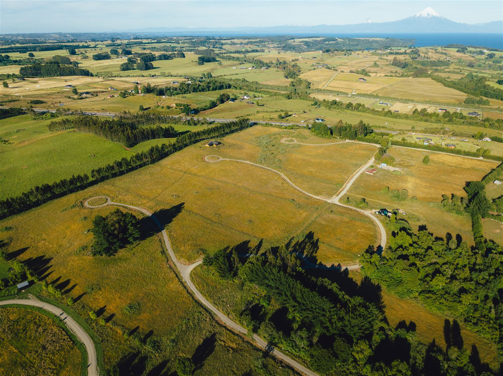

Leemos suelo, normativa, conectividad y mercado local antes de recomendar un terreno. Esta biblioteca reúne la serie sobre contorno rural, territorios donde operamos y casos reales — para decidir con criterio, no con el impulso del aviso.
